Feature Breakdowns
Take a deep dive into key Vidigi Features
Logging and Plotting Helpers
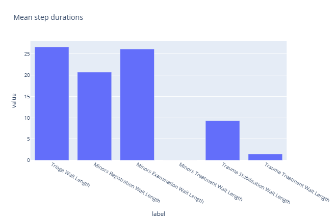
Feature Example: Event Logging Helpers
A closer look at the EventLogger class and its helper methods, which simplify building the event logs vidigi needs for animation.
Feature Example: The TrialLogger Class
A closer look at the TrialLogger class, which wraps the EventLoggers from every run of a trial to give trial-level statistics, duration distributions, and resource utilisation - most of vidigi's non-animation plotting lives here.
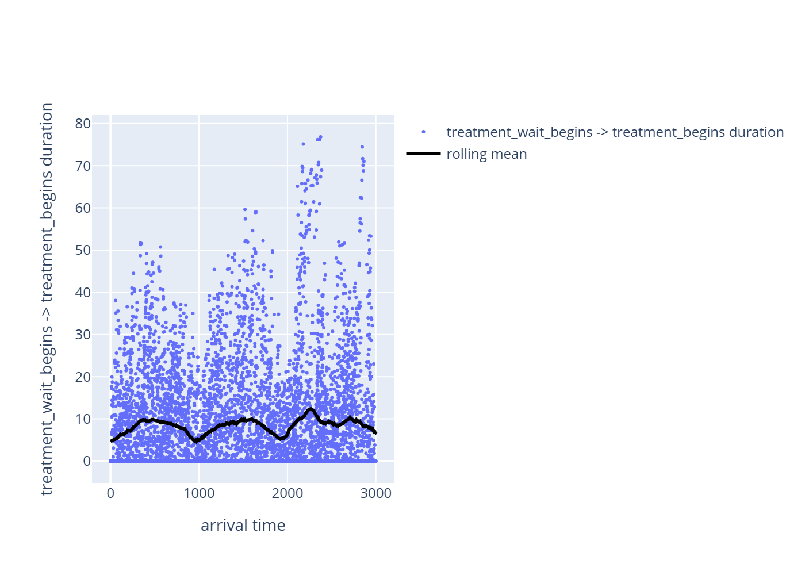
Feature Example: Does This Metric Drift Over the Simulation?
Does a metric drift over the course of a run - a warm-up transient, a time-of-day load effect, a non-stationary arrival process? This walks through `plot_metric_vs_arrival_time()` and `entity_metric_by_arrival()`, which plot a duration against when the entity arrived rather than against replication count or time-in-system, to make that visible.
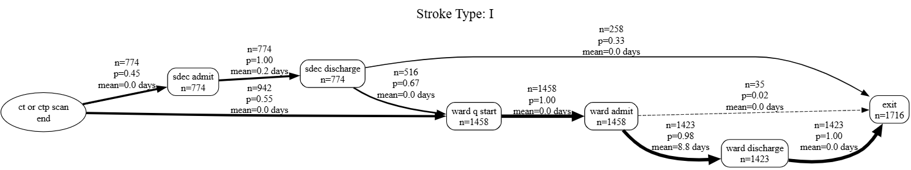
Process-Map Style Outputs (Directly Follows Graphs - DFGs)
Borrows an idea from process mining - the directly-follows graph - to turn a vidigi event log into a process-map style diagram of your model. It's a useful complement to the animation itself for communicating a process to non-technical stakeholders, and for verifying and debugging a model's logic.
Choosing how to summarise across replications
Modelling Helpers
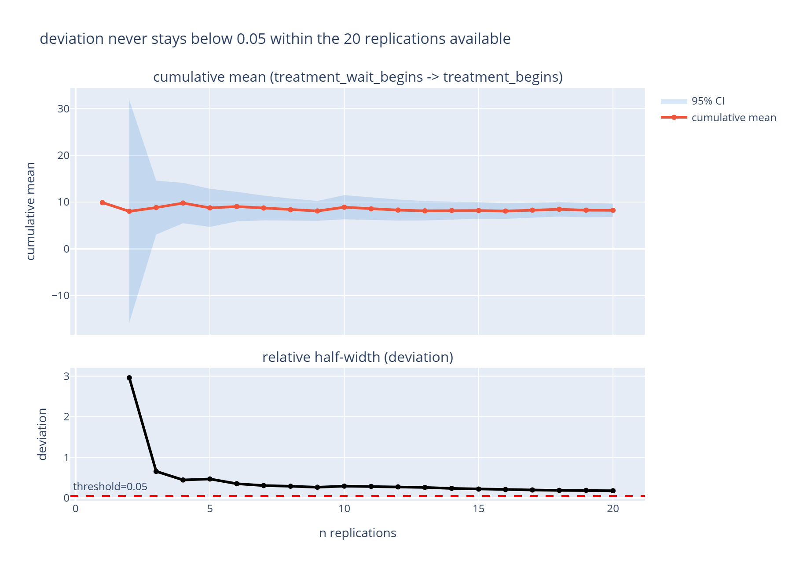
Feature Example: How Many Replications Are Enough?
Confidence-interval replication analysis gives a way to answer "have I run enough replications?" with a number, rather than a guess. This walks through `plot_replication_analysis()` and `replication_precision()`, and how the `deviation_threshold=` recommendation should (and should not) be read.
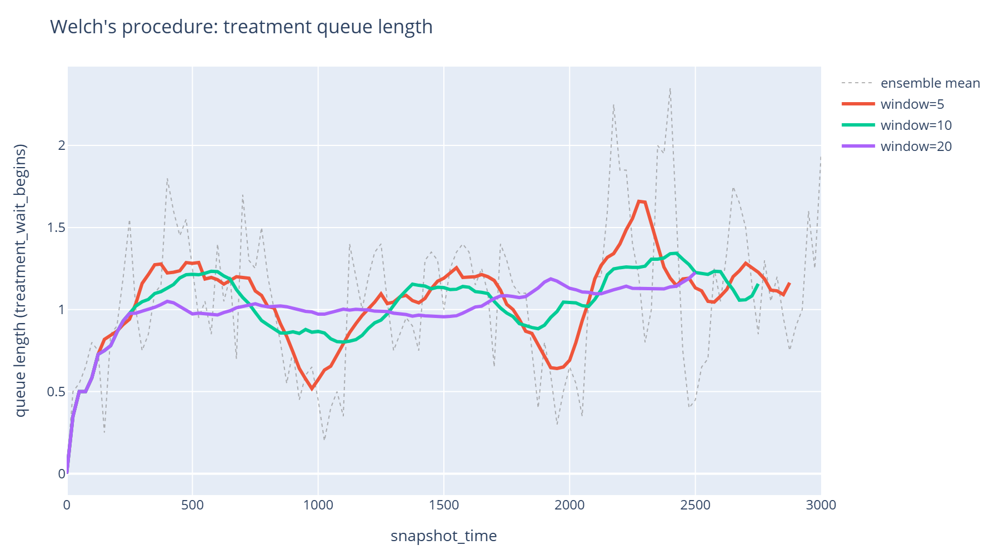
Feature Example: Choosing a Warm-up Length with Welch's Procedure
Welch's procedure gives a visual way to decide how much of a simulation run to discard as warm-up, rather than guessing. This walks through `plot_warm_up_diagnostic()` and `welch_moving_average()`, then shows how to feed the length you read off back into `event_durations`, `resource_utilisation` and `queue_size_over_time`'s own `warm_up=` parameters.
Advanced Vidigi Resource Class Features
Feature Example: Filtering which resource a request is granted
VidigiStore and VidigiPriorityStore normally hand over whichever unit of a pool is free. `filter_fn=` lets a request insist on a *particular kind* of unit - a senior nurse, an isolation-capable bed - and wait for one if none is free. This notebook builds a heterogeneous nurse pool, shows how `filter_fn` changes who waits, and how it combines with `priority=` on VidigiPriorityStore.
Advanced Animation Techniques and Helpers
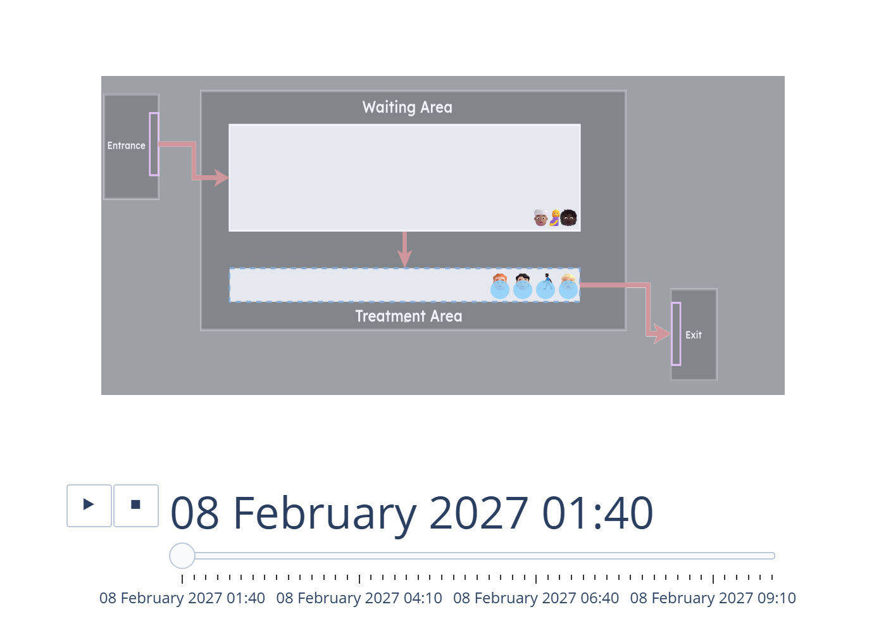
Feature Example: Discarding a Warm-up Period from an Animation
A simulation that starts empty is not yet representative of steady-state behaviour, so it's standard practice to discard an initial warm-up period from reported results. Filtering the event log by time to do this quietly breaks an animation, though - it deletes the arrival record of everyone already in the system, so they vanish from every frame, including ones still queuing. This walks through `reshape_for_animations`/`animate_activity_log`'s `warm_up=` and `snapshot_alignment=` parameters, which trim the animation window instead of the log, so that history stays intact.
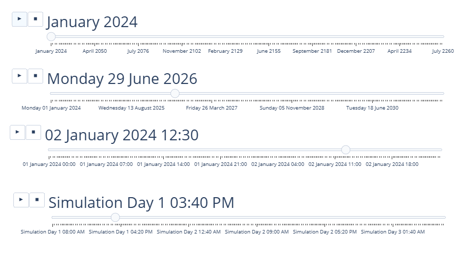
Feature Breakdown: Changing how the date and time are displayed
Simulation clocks usually run in abstract time units, but your audience thinks in real dates and clock times. This example shows how to set a simulation's start date/time so the animation displays a realistic calendar and time-of-day rather than a raw elapsed-time counter.
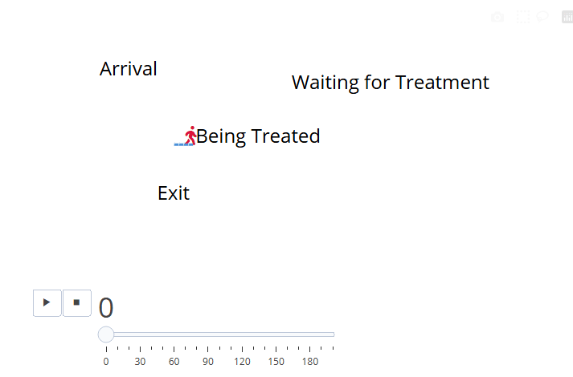
Feature Example: Icon fonts, per-entity colour, and per-resource icons
Entity icons have always been emoji, which caps the icon vocabulary and, being colour fonts, ignore any colour you set on them. This walks through `entity_icon_font` (rendering icons in an icon font instead), the `entity_colour_by` this then unlocks (colouring entities by an event-log column, with a legend), `entity_annotation_by` (a second, independently- styled text trace for annotating an icon without either of those breaking it), `resource_icon` (a custom icon per resource - a glyph or an image - set on the event position and overriding `custom_resource_icon` for that stage), and `resource_icon_font` (rendering glyph resource icons in an icon font, independently of `entity_icon_font`).
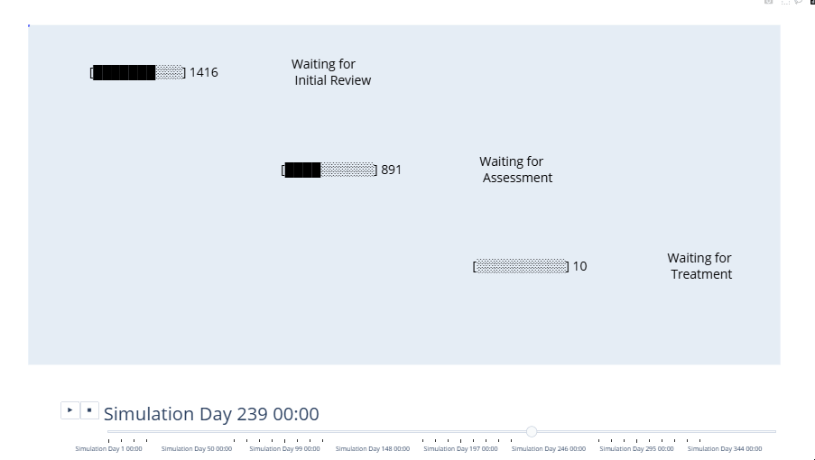
Feature Breakdown: Comparing gauge, hybrid and gaugeless animations for simulations with high entity volumes
vidigi was originally built with small numbers of entities in mind, and Plotly animations start to strain once you're tracking hundreds or thousands at once. Using a triage-assess-treat model as a worked example, this compares the standard entity-icon view against gauge and hybrid displays that stay readable at much higher entity volumes.
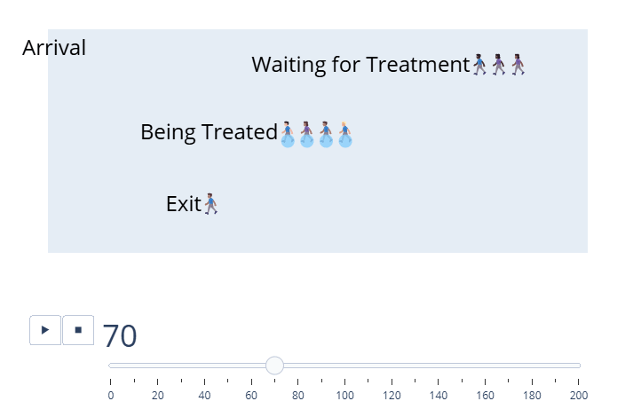
Feature Example: Choosing which way a queue builds
By default a vidigi queue builds out to the *left* of its anchor point, so the first person in line sits at the bottom-right. Many entity emojis face the other way, which makes the front of the queue read better at the bottom-left. This walks through `queue_direction`, which flips a whole animation, and the per-event `direction` column, which flips one stage at a time.
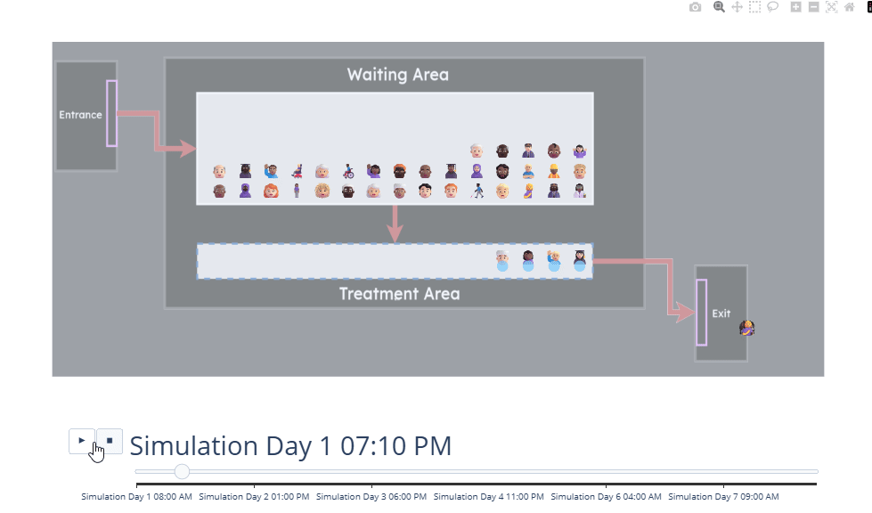
Highlighting different periods with a repeating overlay
Some periods in a simulation deserve to stand out - for instance, a clinic being closed overnight. This example shows how to add a repeating overlay to the animation that highlights those recurring periods automatically as the viewer scrubs through the timeline.
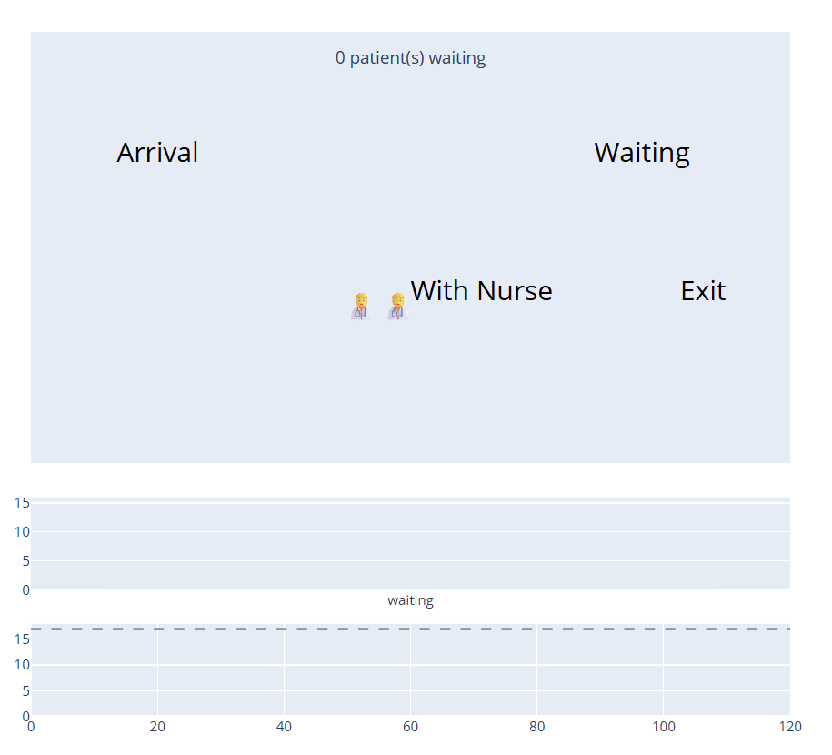
Adding synchronised traces to an animation
A vidigi animation is a plain Plotly figure, and you can add your own charts and annotations to it - a running total, a per-frame bar panel, a live caption. The tricky part is keeping them in step with the animation frames without losing the stage labels or resource icons. `add_subplot_panels`, `add_synchronised_trace` and `add_synchronised_trace_from_dataframe` do that for you.
Major Release Showcases
The examples below showcase significant new features added as part of major releases.